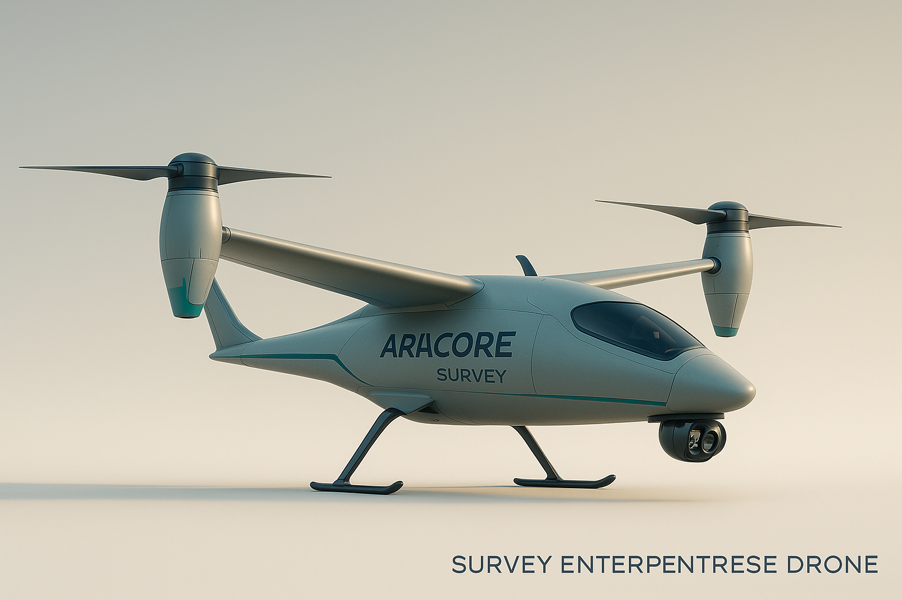

Heavy-lift deployment, high-resolution mapping, and autonomous ecological operations.

Designed for rugged field operations, this hybrid VTOL drone carries up to 10–12 SeedSpheres per mission with precision release and automated retrieval. Capable of long-range flight, autonomous mapping, and rapid deployment across wildfire burn scars or restoration sites.

Built for fast mapping and terrain intelligence, the survey drone uses long-range optics, environmental sensors, and RTK navigation to generate high-resolution 3D models and ecological indices. Ideal for pre/post-restoration analysis and mission planning.